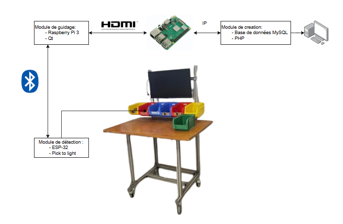
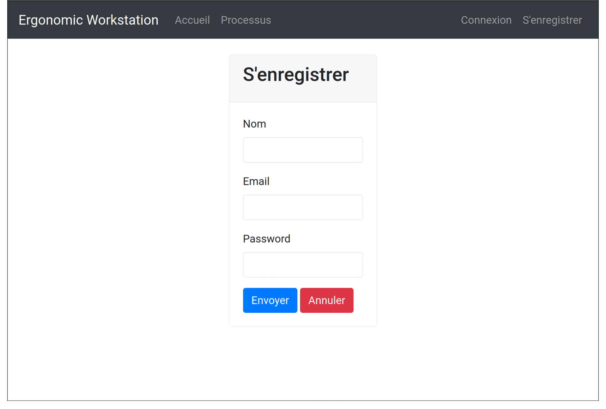
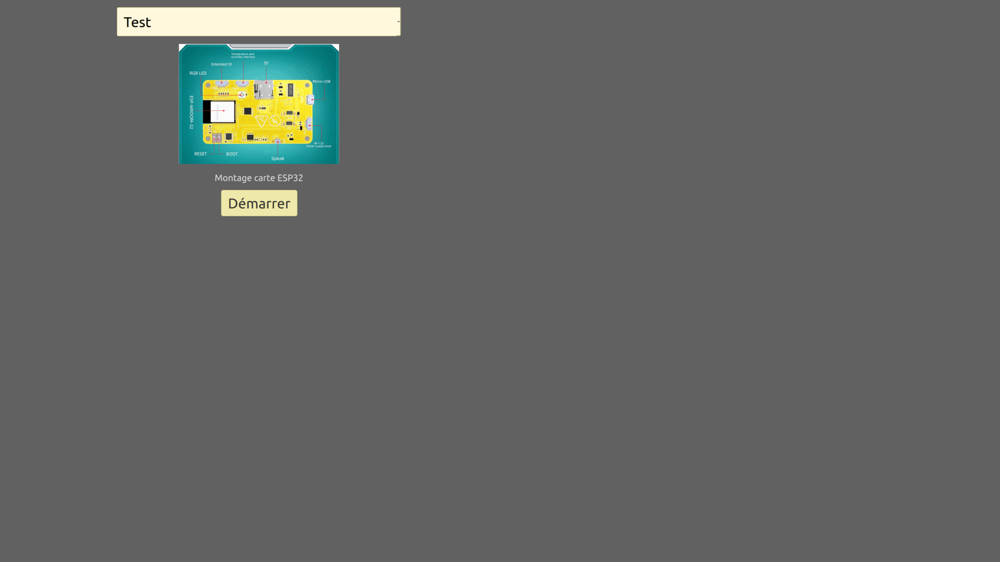
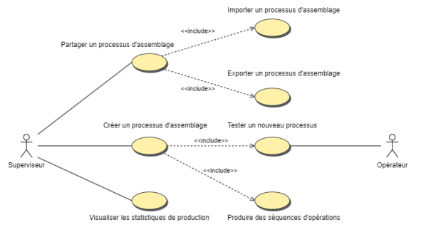
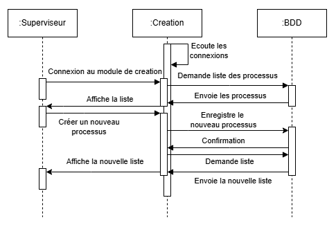
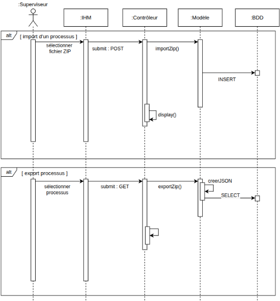
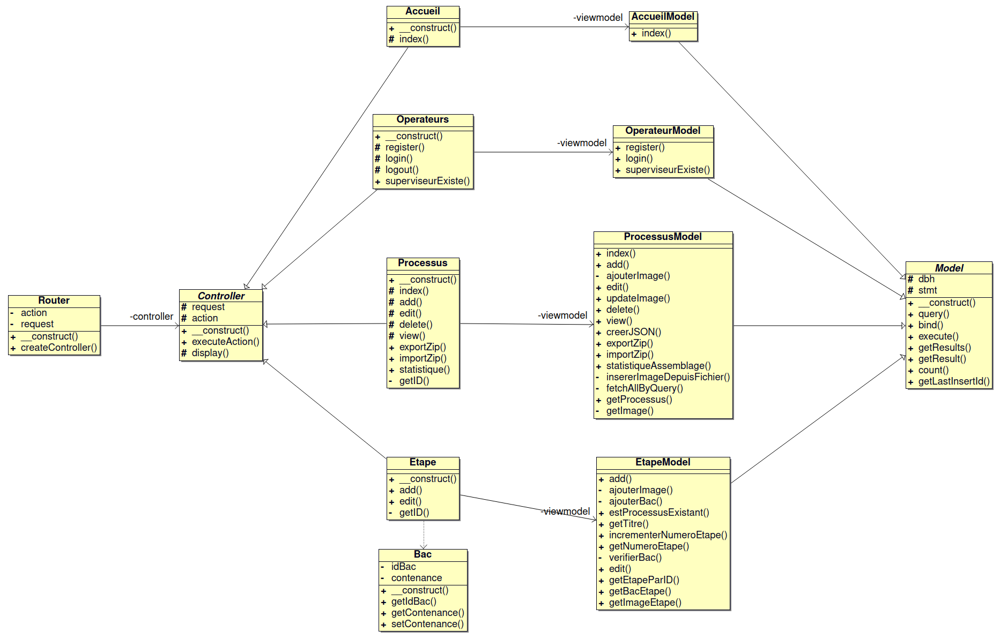
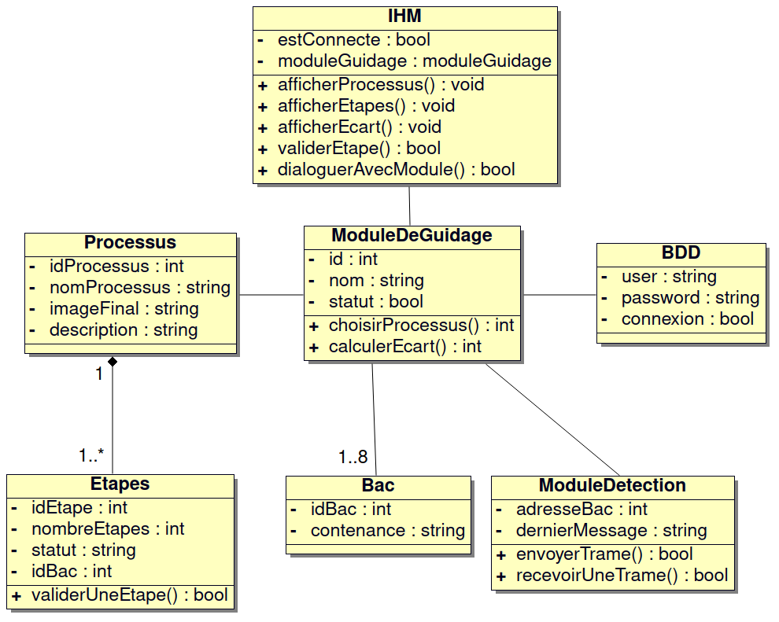
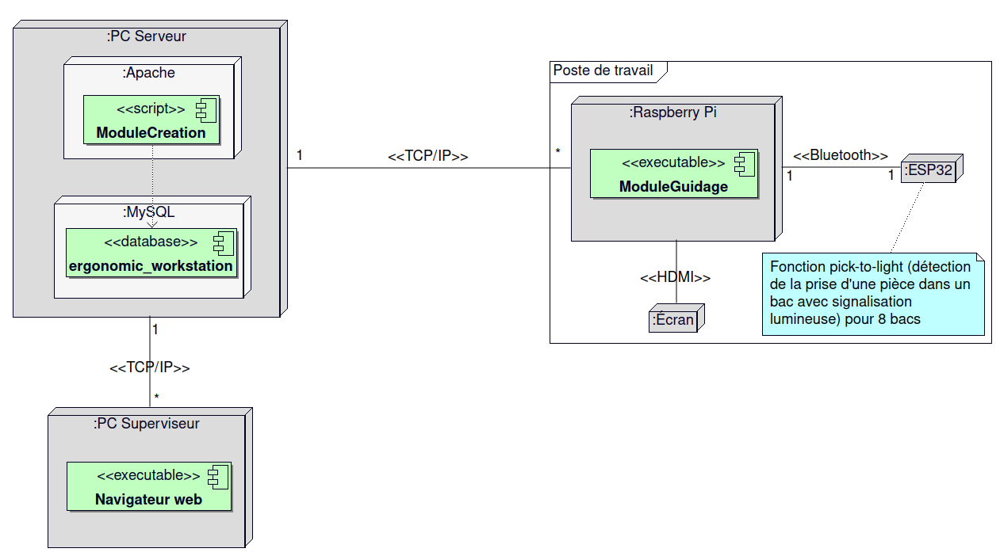

Projet BTS CIEL 2025 : Ergonomic-Workstation-2025
Présentation
Il s’agit de digitaliser un poste de travail afin d’accompagner l’opérateur dans la réalisation d’un assemblage.
Le projet est structuré en deux modules principaux (IR) :
- Module de Création (déployé sur un serveur web Apache) : il permet aux superviseurs de concevoir des processus d'assemblage en organisant des images et du texte dans un ordre spécifique (étapes).
- Module de Guidage (basé sur Qt (Raspberry Pi)) : il affiche les processus d'assemblage aux opérateurs, leur permettant de suivre des instructions en temps réel.
Le poste de travail est aussi équipé d'un module de détection (ER) permettant d’assurer la fonction pick-to-light (indication lumineuse du bac de pièces à utiliser et détection de la prise d’une pièce dans un bac).

Recette
| Module | Étape | À faire | En cours | Terminé |
| Création (IR1) | Créer un processus | | | ✅ |
| Produire des séquences d'opération | | | ✅ |
| Partager un processus | | | ✅ |
| Visualiser les statistiques | | | ✅ |
| Se connecter en tant que superviseur | | | ✅ |
| Afficher les processus créés | | | ✅ |
| Supprimer et modifier un processus | | | ✅ |
| Guidage (IR2) | Affichage des étapes | | | ✅ |
| Validation des étapes par l'opérateur | | | ✅ |
| Enregistrement de la progression | ⬜ | | |
| Connexion au backend pour récupérer les données | | | ✅ |
| Interaction avec la base de données | | | ✅ |
Utilisation
Module de Création
- Connexion Accédez au site web hébergé en local via un navigateur web.
- Accès au module Dans le menu, cliquez sur Processus pour accéder au module de création
- Première utilisation Lors de la toute première connexion, seules deux options sont disponibles :
- Créer un nouveau processus
- Importer un processus existant
- Si des processus existent déjà Des options supplémentaires apparaîtront :
- Ajouter des étapes à un processus existant
- Exporter un processus
- Fonctionnalités désormais disponibles
- Modifier un processus
- Voir les détails d’un processus
- Supprimer un processus
- Statistique du processus

Module de Guidage

Gestion de projet
GitHub Project
Module de Création
- Mise en place du serveur Apache et configuration PHP
- Implémentation de la création d’un processus
- Ajout de la gestion des étapes
- Gestion de l’upload des images
- Fonctionnalité de partage de processus
- Affichage des processus créés
- Suppression et modification des processus
- Interface d’import/export via fichiers ZIP (JSON + images séparées)
Module de Guidage
- Configurer l’environnement de développement Qt
- Lister les processus d'assemblage
- Sélectionner et démarrer un processus d'assemblage
- Afficher et valider une étape
- Quitter un processus d'assemblage
- Dialoguer avec le poste de travail
Module de Création
- [ ] Permettre un tri personnalisé des étapes par drag & drop
- [ ] Ajouter une vue graphique des statistiques d’utilisation des processus
- [ ] Possibilité de prévisualiser le diaporama avant exportation
- [ ] Support multi-utilisateur : journalisation des actions par utilisateur connecté
Module de Guidage
- [ ] Gérer les erreurs
- [ ] Sauvegarder la progression de l’opérateur
Diagrammes des cas d'utilisation
Module de Création

Module de Guidage

Diagrammes de séquence
Création d’un processus

Import / Export d’un processus

Diagrammes de classes
Module de Création

Module de Guidage

Diagramme de déploiement

Équipe de développement
© 2024-2025 LaSalle Avignon